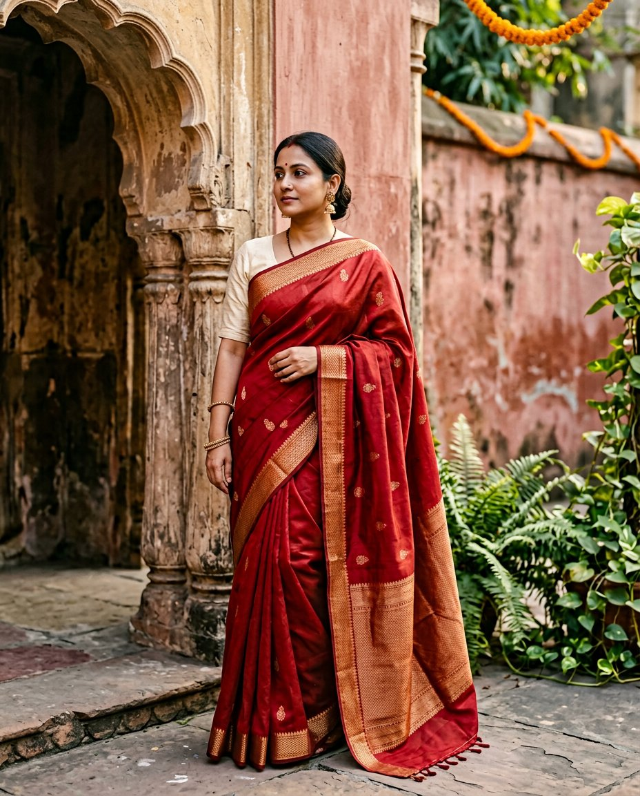
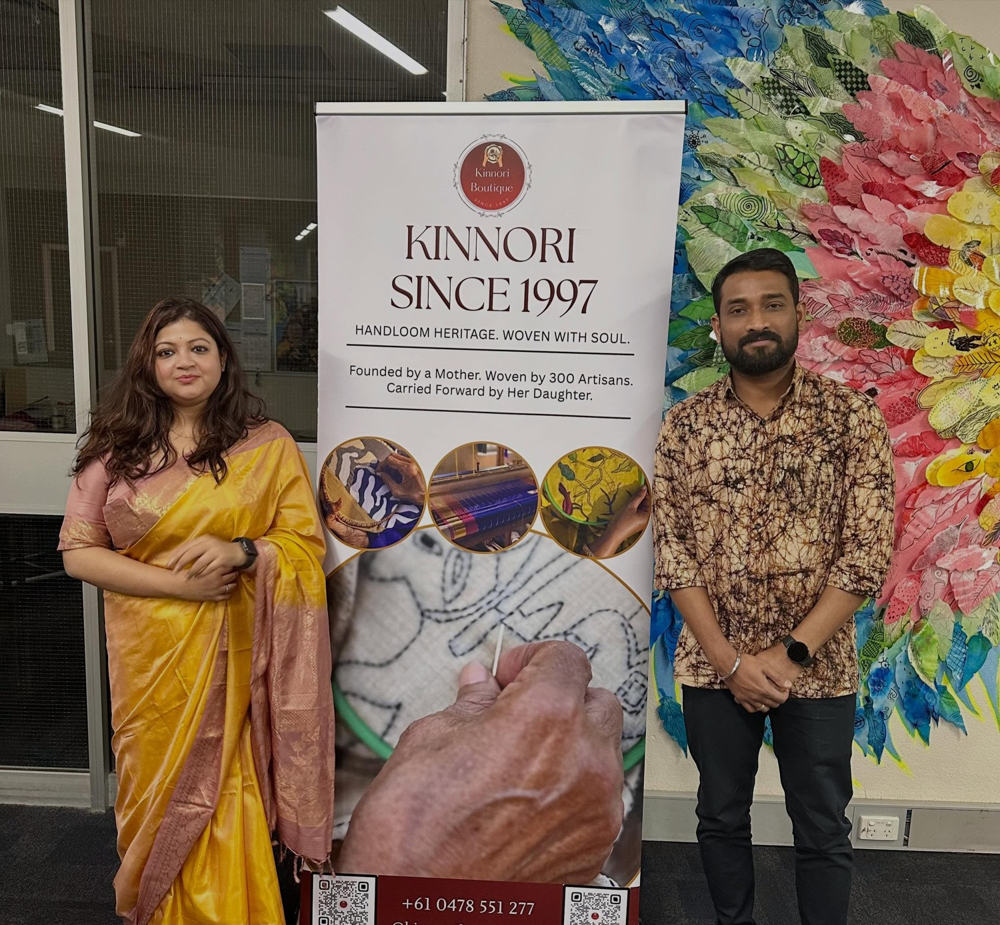
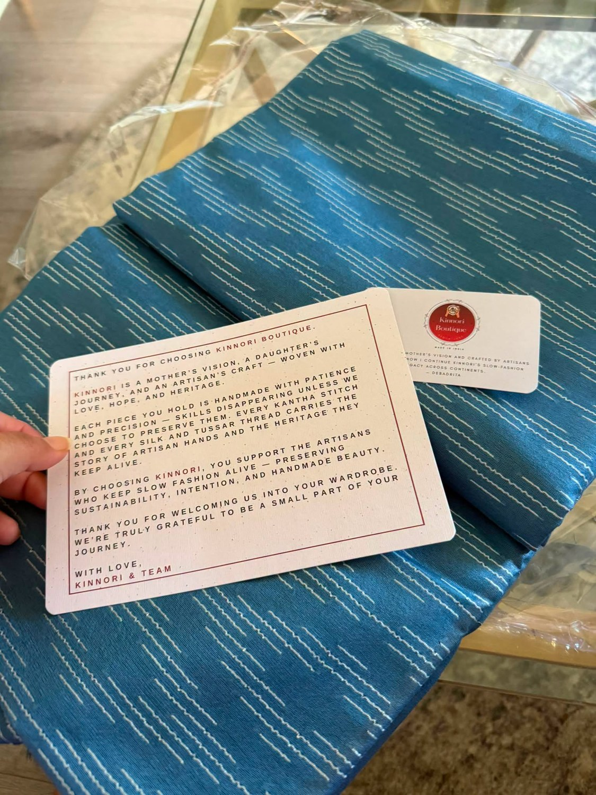

The language of Kantha
Little running stitches, layered with stories. Bengal’s treasured embroidery, carried forward by artisan hands.
Not just six yards. A mother’s dream, an artisan’s
touch, and a story that becomes your own.

For the everyday, the extraordinary,
and everything you’ll remember.
Every piece has its own story. Ask us about current designs, prices, and availability.

OUR FAMILY. OUR JOURNEY. OUR KINNORI.“Hi, I’m Debadrita. Kinnori is my mother’s vision, carried across oceans and close to my heart.”
Since 1997, our family of 300 Bengal artisans has brought her designs to life through Kantha, hand-painting, and beautiful handloom weaves. Today, I’m carrying that legacy forward in Melbourne — one saree, one connection, one story at a time.
With love, Debadrita ♡
Meet the craft behind the cloth ↗A steady hand. An inherited skill. The patience to make something truly beautiful.
Explore the saree editLittle running stitches, layered with stories. Bengal’s treasured embroidery, carried forward by artisan hands.
Hand-painted details turn a saree into wearable art. An expression of the artist, and of the woman who wears it.
Choosing Kinnori supports the artisans who keep these skills alive. Less haste. More meaning.

Looking for something special? Tell Debadrita about your occasion, your favourite colours, or simply what you love. We’ll help you find a piece that feels like you.
Chat with DebadritaFind Kinnori at local exhibitions and community celebrations.